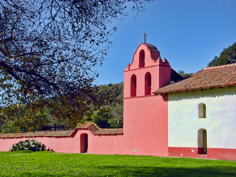
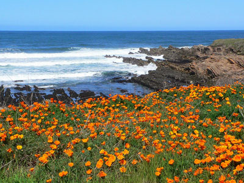
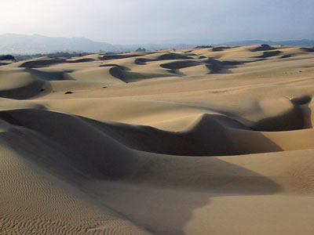
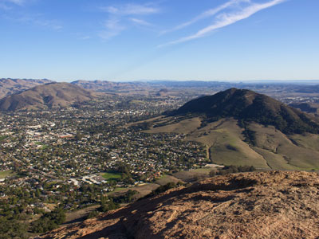
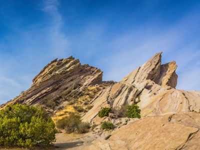
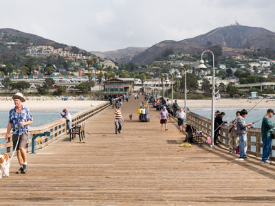

Central California Coast Travel Guide
California region along the central Pacific Ocean coast directly west of Los Angeles and encompases the cities of Malibu, Santa Barbara, Ventura, Pismo Beach, San Luis Obispo and Morro Bay


-400.jpg)

.jpg){kind=link}
Places to See in Central California Coast
Antelope Valley California Poppy Reserve State Natural Reserve
State-protected reserve of California, harboring the most consistent blooms of California poppies, the state flower
-400.jpg)
Bureau of Land Management, Public domain, via Wikimedia Commons; Image Size Adjusted
.jpg){kind=link}
Carrizo Plain National Monument
Largest single native grassland remaining in California
-400.jpg)
National Marine Sanctuaries, Public domain, via Wikimedia Commons; Image Size Adjusted
.jpg){kind=link}
Channel Islands National Park
Protected marine and island ecosystem featuring endemic wildlife, sea caves, hiking trails, and underwater reserves across five isolated islands.

Jsweida, CC BY-SA 3.0, via Wikimedia Commons; Image Size Adjusted

La Purisima Mission
Currently the only example in California of a complete Spanish Catholic mission complex, and was designated a National Historic Landmark in 1970

Photograph by Mike Peel (www.mikepeel.net), CC BY-SA 4.0, via Wikimedia Commons; Image Size Adjusted

Malibu
Beach city in the Santa Monica Mountains region, situated about 30 miles west of Downtown Los Angeles, known for its Mediterranean climate and its 21-mile strip of the Malibu coast
Mission San Fernando Rey de España
Spanish mission in the Mission Hills community of Los Angeles and was the seventeenth of the twenty-one Spanish missions is the namesake of the nearby city of San Fernando and the San Fernando Valley
Mission Santa Ines
Home to the first learning institution in Alta California and today serves as a museum

Joyce Cory on Flickr as docentjoyce, CC BY 2.0, via Wikimedia Commons; Image Size Adjusted

Montaña de Oro State Park
State park in Central Coastal California, six miles southwest of Morro Bay, consisting of 8,000 acres of cliffs, seven miles of shoreline, sandy beaches, dunes, coastal plains, streams, canyons, and hills, including the 1,347-foot Valencia Peak
Morro Bay
Seaside city located on the Central Coast of California, known for the large estuary that is situated along the northern shores of the bay itself

Mike Baird, CC BY 2.0, via Wikimedia Commons; Image Size Adjusted

Oceano Dunes State Vehicular Recreation Area
State area consisting of five and half miles of beach open for vehicle use and a large area of the sand dunes open for off-highway vehicle (OHV) use

Pismo Beach
City in the Central Coast area of California, and is part of the Five Cities area, a cluster of cities in the area

Gema98, CC BY-SA 4.0, via Wikimedia Commons; Image Size Adjusted

San Luis Obispo
City located on the Central Coast of California, is a popular tourist destination, known for its historic architecture, vineyards, and hospitality
-400.jpg)
Doc Searls, CC BY 2.0, via Wikimedia Commons; Image Size Adjusted
.jpg){kind=link}
Santa Barbara
Coastal city in California, situated on a south-facing section of coastline, the city lies between the steeply rising Santa Ynez Mountains and the Pacific Ocean

Jordanamnebrink, CC BY-SA 4.0, via Wikimedia Commons; Image Size Adjusted

Santa Monica Mountains National Recreation Area
National recreation area containing many individual parks and open space preserves, located primarily in the Santa Monica Mountains of Southern California

Jeff Turner, CC BY 2.0, via Wikimedia Commons; Image Size Adjusted
.jpg){kind=link}
Vasquez Rocks Natural Area and Nature Center
932-acre park known for its rock formations, the result of sedimentary layering and later seismic uplift and has often been used as a location for films and television shows

Tuxyso, CC BY-SA 3.0, via Wikimedia Commons; Image Size Adjusted

Ventura
Officially San Buenaventura, city is a coastal site, set against undeveloped hills and flanked by two free-flowing rivers on the Central California Coast
Overview
The Central California Coast stretches along the Pacific from Malibu north through Ventura and Santa Barbara to Pismo Beach, San Luis Obispo, and Morro Bay. Travelers come for uncrowded beaches, mild weather, surf breaks, Spanish mission history, and a slower pace than neighboring Los Angeles. Highway 1 and U.S. 101 tie the region together, passing seaside piers, rocky headlands, and small downtowns.
Visitors also come for the wildlife and the food and wine. Whales, dolphins, sea lions, and seabirds thrive in the cold, nutrient-rich waters offshore, and the Channel Islands draw hikers, kayakers, and divers. Inland, the Santa Ynez Valley and Edna Valley produce well-known wines, and farm-fresh produce and fresh seafood fill local menus.
Geography
The coast sits where the east-west Transverse Ranges meet the north-south Coast Ranges, so the shoreline turns to face south along the Santa Barbara Channel before swinging northwest toward Point Conception. The Santa Monica and Santa Ynez Mountains rise steeply behind the beaches, while the Santa Lucia Range and the volcanic Morros, including Morro Rock, define the northern end. Sand dunes, wetlands, and coastal terraces line the shore, and the eight Channel Islands lie offshore. Summer fog is common along the coast and often burns off by afternoon.
History
The Chumash lived along this coast and on the northern Channel Islands for thousands of years, building plank canoes called tomols to trade across the channel. Juan Rodríguez Cabrillo sailed these waters in 1542, and Spain began settling the area after the 1769 Portolá expedition. Franciscan missions followed, including San Luis Obispo (1772), San Buenaventura (1782), Santa Barbara (1786), La Purisima (1787), and Santa Ines (1804). After Mexican independence, large ranchos replaced the missions, and California became part of the United States in 1848. Railroads, oil, agriculture, and later Highway 1 and the film industry shaped modern communities, and Santa Barbara rebuilt in a Spanish Colonial Revival style after its 1925 earthquake.
Cities and Towns
Santa Barbara is the region's best-known destination, with Stearns Wharf, palm-lined beaches, the Old Mission, and a Spanish-style downtown. Malibu is famous for its surf beaches, the Malibu Pier, and Getty Villa nearby. Ventura offers a historic downtown, a pier, and the departure harbor for Channel Islands boats. Pismo Beach is a classic beach town known for its pier, clam heritage, and monarch butterfly groves. San Luis Obispo is a college town with a farmers' market and a mission at its center, and Morro Bay is a working harbor beneath Morro Rock, with a large estuary popular for birding and kayaking.
National Protected Areas
Channel Islands National Park protects five islands and the waters around them, with sea caves, kelp forests, and unique island wildlife, and is reached by boat or plane from Ventura. The Santa Monica Mountains National Recreation Area spans the mountains and beaches around Malibu, with trails, canyons, and wildflower displays in spring. Inland, Carrizo Plain National Monument preserves the largest remaining native grassland in California and the visible trace of the San Andreas Fault, and it is known for spring wildflower blooms.
State Parks and Historic Sites
Montaña de Oro State Park has rugged bluffs, tide pools, and hiking trails near Los Osos. Oceano Dunes State Vehicular Recreation Area protects one of the largest coastal dune systems on the West Coast. Point Mugu and Leo Carrillo state parks offer beaches, camping, and coastal hiking along the Malibu coast. La Purisima Mission State Historic Park near Lompoc is one of the best-restored Spanish missions in California, and the missions of Santa Barbara, San Luis Obispo, and Santa Ines are also open to visitors.
Seasons and Best Time to Visit
The coast has a mild Mediterranean climate, with most rain falling from November through March. Spring brings wildflowers at Carrizo Plain and in the Santa Monica Mountains and good hiking, and gray whales migrate past the coast in winter and spring. Summer is the busiest season for beaches, surfing, kayaking, and camping, though morning fog is common. Fall is often the warmest and clearest time, with fewer crowds, good diving, and the grape harvest in the wine valleys. Winter is quieter and is the season for whale watching, monarch butterfly groves at Pismo Beach, and storm watching.
This article uses material from the Wikipedia articles and official tourism pages for the Central Coast of California, which are released under the Creative Commons Attribution-Share-Alike License 3.0. Additional information is from the National Park Service pages for Channel Islands National Park and Santa Monica Mountains National Recreation Area, the Bureau of Land Management page for Carrizo Plain National Monument, and California State Parks.